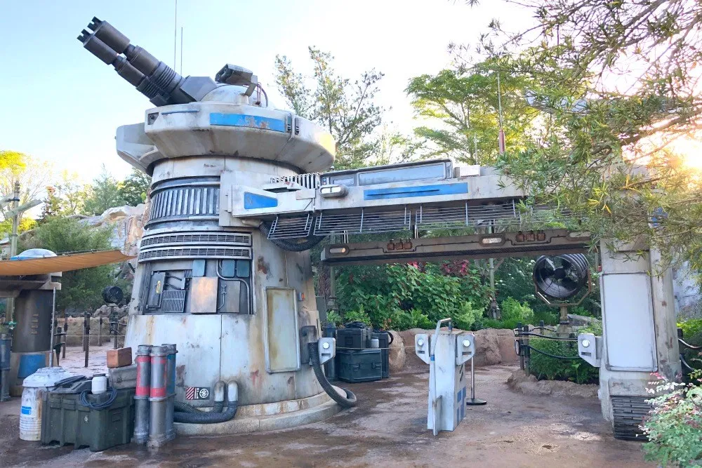

Star Wars: Galaxy's Edge

Overview
The newest land in the park, Star Wars: Galaxy's Edge is a must-visit for anyone, whether or not you have seen the new movies. Set on the planet of Batuu, you are immediately immersed on your own Star Wars story. You will see characters roaming the land and can ride two of the best rides on property. Of course, this is also the most popular land in the park - so take that into account when planning your day!
Rides
There are two rides in Star Wars: Galaxy's Edge. The first ride is Millenium Falcon: Smuggler's Run. A flight simulator, Smuggler's Run is extremely fun and a must-do during your Disneyland visit. It can be intense, but it is enjoyable for most people who meet the minimum height requirement. On Smuggler's Run, you will be assigned one of three roles: Pilot, Gunner, or Engineer. Pilot is by far the most fun role (you get to fly the Millenium Falcon!), followed distantly by Gunner then Engineer. Note that Smuggler's Run has single rider, but you are virtually guaranteed to be assigned engineer, so I would advise against single rider if the wait is less than 50 minutes.
The second ride in Galaxy's Edge is the new crown jewel of Disneyland - Star Wars: Rise of the Resistance (RoTR or Rise). Rise might be the single best ride in any Disney Park globally. Wait times are not an issue because you have to get a "boarding group" (more on this below). Rise takes you on several different attractions all in one - it is a fully immersive journey that you have to see to believe. Rise will blow you away, and I would recommend everyone to ride it if they can.
Food and Drink
Galaxy's Edge has three places to eat and drink, all of which offer different fare. Docking Bay 7 is the equivalent of a classic counter-service restaurant, offering intergalacticly-named American food that can be quite tasty at times. This is not a bad spot to eat a meal, but it can be expensive for counter service. Next up is Ronto Roasters, where you can get variations of the "Ronto Wrap," a sausage pita wrap. Contrary to what it seems, Ronto Roasters is a must-stop for me on every Disneyland trip I make. I love the zestyness of the peppercorn sauce, and the sausage wrap tastes amazing. I personally prefer the original Ronto Wrap to the "Breakfast Ronto Wrap" that includes egg and cheese, but many people prefer the Breakfast Wrap. Finally, Oga's Cantina is a great stop for drinks and is actually the only publicly-accessible place in the park that serves alcoholic beverages. Oga's requires advance dining reservations (ADRs), so don't forget to reserve your spot in advance. It is a quite immersive and enjoyable experience, but it can be quite expensive if every member of your party orders a beverage.
Tips and Tricks
Getting a Boarding Group seems like an impossible task, but it is quite doable if you follow some basic steps: Install the Disneyland App on your phone, clear out all other apps, arrive at the park 45 minutes before opening, walk to a part of the park with few people, and wait for the app to allow you to join a boarding group. Then, just click "Join Boarding Group" and you're all set! Otherwise, the most important tip is to get a Ronto Wrap - you won't regret it!

This work is licensed under a Creative Commons Attribution 4.0 International License.